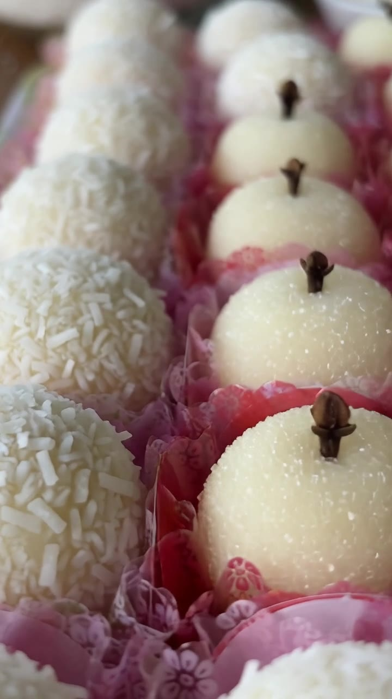
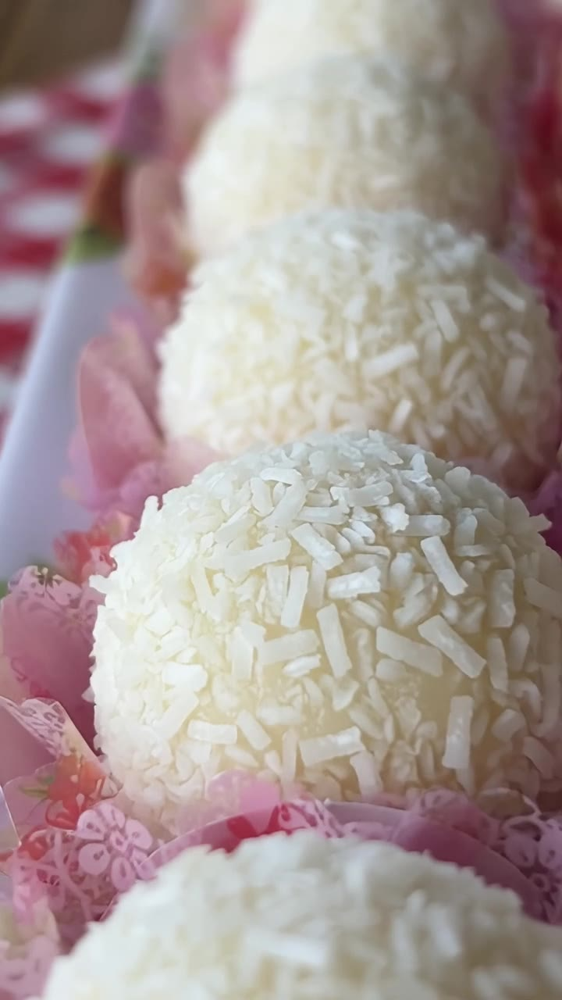

Beijinho de coco tradicional
Beijinho de coco tradicional, macio e cremoso, com leite condensado, coco ralado e creme de leite. Enrolado no açúcar cristal com cravinho ou no coco ralado.

cerca de 30 unidades · toque para marcar o que já separou
O beijinho de coco é um clássico que nunca sai de moda nas festas brasileiras. Nesta versão, o creme de leite deixa a massa ainda mais macia e cremosa. Você pode fazer do jeito tradicional, passado no açúcar cristal com um cravinho em cima, ou envolver no coco ralado. Na festa, o ideal é servir dos dois jeitos.
Modo de preparo- Leve o leite condensado, o coco, a manteiga e o creme de leite ao fogo baixo.
- Mexa sempre, até a massa desgrudar do fundo da panela.
- Transfira para um prato untado e deixe esfriar completamente.
- Com as mãos levemente untadas, enrole os beijinhos.
- Passe metade no açúcar cristal e decore cada um com um cravinho. Passe a outra metade no coco ralado.


Boleira de vidro com borda de bolinhas
A boleira com pé que deixa bolos e docinhos com cara de confeitaria. Linda para festas, mesa de Natal e fotos de receitas.
Loja dos Estados Unidos: preço em dólar e entrega conforme as regras da Amazon.
Link de afiliado. Como Associada Amazon, ganho com compras qualificadas.
Publicada em 25 de novembro de 2026 · Tempo total: 30 min · Imagem ilustrativa criada com IA.
Conta pra gente como ficou! Deixe um comentário, mande uma foto do seu resultado ou marque @melhores.receitas126 no seu post.